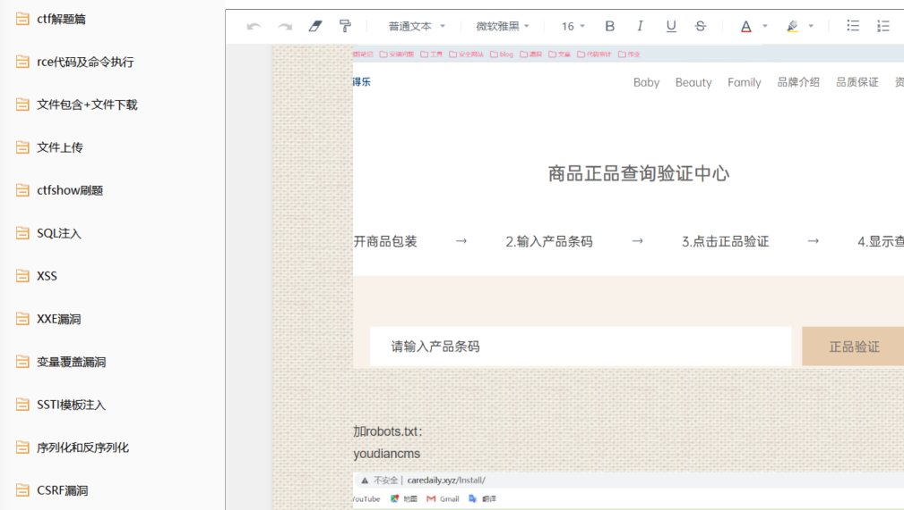

漫漫长路，皆为星途
前言
大二开学快一个月了，这篇文章本来在大一结束就想写了，但是最近事情太多了，要忙着社团的招新，考核，上课，学自己的东西，还有很多杂七杂八的事儿。就挑一个周末，把想写的东西都写了吧~
关于大一
一
记得自己是在去年的十月中旬通过了现在所在社团的最终考核，加入到了这里，开始信安的学习之路。选择参加一个科技社团，一方面是我觉得在大学本就是一个去提升自己的过程，另一方面，是因为我害怕不是本意选择计算机这个专业的我，进入大学之后会变得迷茫和无所适从。也并没有说对这个专业有抵抗心理，总觉得自己比较偏文科体质，学习工科好像不是那么合适。但是人生也会有很多意外吧，高考的结果只是这一条漫漫长路上很重要，但是又不是唯一的一个节点，我也相信，在全新的环境里，只要我想做，也一定可以绽放属于自己的光芒。我开始尝试去了解这个专业的东西，在暑假开始学了一点点的C语言，直到开学的信安社团招新宣讲，我感觉信息安全好像很有趣的样子，于是我开始去搜，去百度，去尝试了解一点关于这个专业的信息。说实话，学长的招新宣讲，跟别人不太一样，他们很安静，宣讲没有诙谐的气息，就是正正经经的介绍，也讲到了学长学姐的考研保研，好几个社团呢，但是我选择了来这里了解一下下，大概是我也很害怕在这个陌生的环境跟大家接触吧，希望安静一点，就莫名有点吸引我（虽然我真的觉得学长的宣讲不是那么吸引人哈哈哈哈哈哈）。
二
在社团最终考核前的这差不多一个月的时间里，我每天都会去社团学习C语言，其实自己的进度很慢，看到现在大一的一些学弟学妹，其实自己也有一点点理解他们的心情吧~在这一个月的时间里，自己还是处于一个很自卑的状态，因为自己什么都不会，打字打得很慢，害怕别人看我敲代码，看到跟自己同年级的来社团学习的同学，都觉得他们好厉害。就这样每天可能都会有一点这种想法，但是自己也是很想好好去学好的啦，也很开心最后能通过考核进入到这里，接触到ctf，去进一步接触和了解自己感兴趣的网站安全的内容。
三
记得最开始接触ctf，是一个学长在我面前把攻防世界web新手区的一二题一下子就解开了，我那个时候虽然有点懵懵的，但也是那个时候，打开了我对这个方向从只是听说到自己上手的大门。从十月底一直到寒假前，都是在攻防世界、buuctf上写题比较多一点，学习HTML、开始接触php，文件包含、伪协议、ssti、反序列化，以及一些图片隐写、工具使用、古典编码等，但是对于漏洞的理解其实还是很浅的，也因为觉得自己学得慢，学得少，心里压力很大，我记得那段时间就老是哭，吃东西吃得很多，变得很敏感，但是毕竟也刚开始学呀，也不是那么快就能变得很厉害的。到学期期末大概一月份的时候，关于一个反序列化字符串逃逸的问题让我困惑了好久，那个时候看了一些文章但是也还是有点难理解，就搁浅下了。快学期期末的时候，开始着手学习python，看书，跟着敲了一些，把大概的语法知识看了一遍。寒假的开始，我利用Hexo搭建了自己的个人博客，开始在sqli-labs上打靶场，更细地去学习SQL注入，数字型、字符型、联合查询、报错注入、延时盲注以及sqlmap的简单用法，打了靶场第一页那些很简单的关卡，练习手工注入。下载了upload-labs，去做文件上传的靶场闯关，知道了一句话木马，文件上传的基本绕过思路，.htaccess .user.ini等，开始打dvwa和pikachu靶场里的文件包含题，bugku打题，然后，寒假悄咪咪地就过去了，大一上学期自己心里其实也会有落差，不太想学习，导致大一上学期的学分绩也很低，后来还是觉得要是真的觉得想学的话就好好学啦。
四
大一下的开学，从上个学期的一周交一次报告，变成了两周交一次、一个月交一次，开学还是继续进行着漏洞的学习，做了一些比较简单又不那么成熟的反序列化笔记呀、代码执行、命令执行的一些相关函数的了解，学习了xss，上面的学习都是自己在B站找视频看的，靶场是跟着学长给的书里下载的。学了XXE，知道了一点点的实体注入知识，打了xss-labs的靶场绕过，这个是跟着小迪师傅的视频下载的，也跟着小迪师傅学了ssrf和csrf，期间还是在buuctf上写web题，打dvwa和pikachu靶场。期间，四月底跟着学长们去参加了一个星期的护网，吃了一星期的盒饭，因为自己那个时候也没开始学挖洞，所以xiaofeiji啥也不会，看着学长打分，自己跟着干饭，打打ctf，打打靶场，下次再去吃盒饭，我也要去打分啦。在三月底开始打了dc系列的1-7的靶机，了解了一些信息收集的思路，提权的方法。跟着学长一起打了iscc，打了强网杯，自己也开始在线上赛写题，也知道了很多很厉害的师傅，会去看他们的博客，跟着他们的思路去做题。也把上学期没有解决的反序列化字符串逃逸给学会了，学了PHP pop链的构造，也开始做漏洞的复现，下载vulhub去复现一些cve的漏洞，写自己的博客做总结。接触到一点点的内存取证，开始自己去写SQL盲注的脚本，感觉大一下学期接触的东西会稍微多了一点点，虽然自己还是很菜啦。
五
好像就要到暑假了~从快期末就跟着小迪的视频开始学了一些，所以暑假的时候也是跟着课程把那些接触过的漏洞都看了一遍。完善了自己的笔记：

也发了一些在博客上，但是大部分的东西还是放在本地了。在ctfshow上写题，去看ctf的解题思路，跟着师傅们学了无数字字母rce，异或运算等没有接触过的内容，暑假就是在小迪的课程以及ctfshow上停留的时间更长一些，也做了一些中间件的cve漏洞复现。在暑假的末尾，开始想着大二的走向，ctf还是想继续打的咧，虽然我很菜，但是还是想写，嘿嘿。因为在漏洞复现的时候会接触到一些漏洞原理的分析，暑假的无数字字母rce也看的p神的文章，我感觉我还是有一点点想走代码审计的方向的，就想着尝试一下啦。
关于大二
一
大二的开始，随之而来的就是专业分流后的信安专业课，信安数学真难。考了两次才过的四级，我啥也不会了······然后，就是社团的招新了，宣传，介绍，考核题目，培训内容······结果博客环境还崩掉了，昨天弄到两点半多了终于弄回来了：
二
第一次培训还是很开心面试过了的学弟学妹都来听啦，中间还经历了从会议室换到一个教室再换到另一个教室的波折，其实考核出题也好培训也好，我感觉招新也是在不断完善自己的一个过程吧，会盯着题目的每一个函数去研究，会不会有其他的解法，函数的具体用法和意思，会不会有其他的漏洞等等。关于代码审计的进度，是跟着课程学习了一些HTML、css的前端知识，PHP的基本知识，mysql的基本用法以及PHP+mysql的操作连接等。打算继续往下学啦。也跟了一个小组进行学习，希望自己能都学好啦。现在觉得，来了这里，学了信安也真的很喜欢呀，没有想过的前方，现在也慢慢有方向啦，努力去学，就一定会是星途呀。